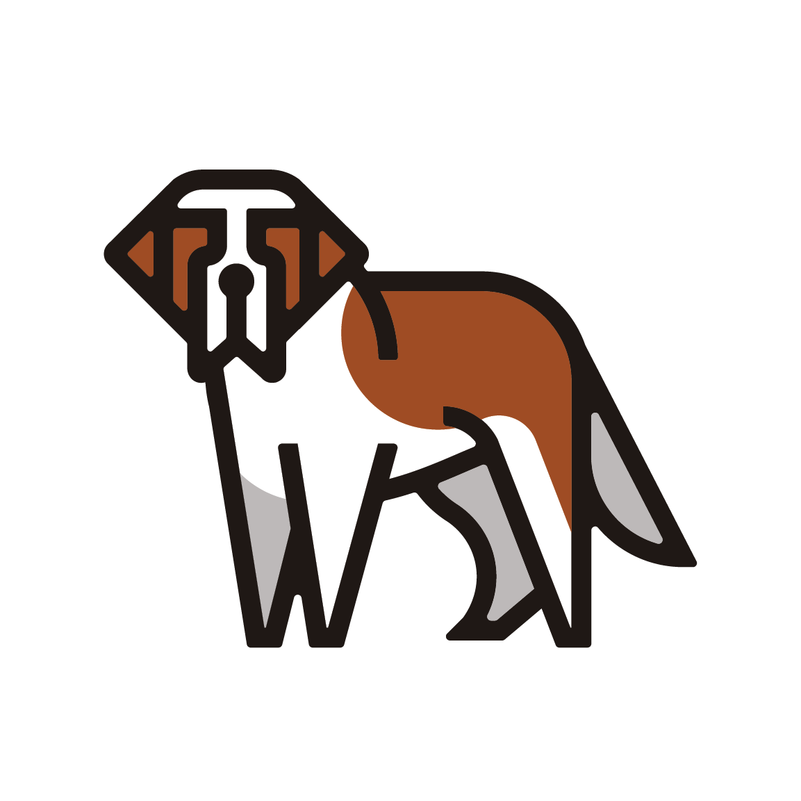

Day 31: SLA 與自癒——讓雲自己救自己¶
到目前為止,VM 掛了要靠人去重開,一台 compute 主機死了上面的機器就跟著陪葬。今天讓雲自己處理這兩件事:Masakari 盯著每台 VM 與每台主機,程序死掉自動重啟、主機失效自動把 VM 搬到別台去。這是 Sprint 5 唯一回多機環境的一天,也是唯一一次你會親手把一台主機弄死,再看雲自己把它上面的機器救回來。

你在課程的哪裡
- Day 23:多節點環境建好,關掉一台 controller 只停 6 秒。
- 今天:回多機環境。先做重啟健檢,補上 evacuate 缺的 Cinder,部署 Masakari,驗證兩層自癒。
- 今天之後:多機環境用完即關;Day 32 回單機,把所有 API 換上 https。
自癒有兩層,別搞混¶
「VM 掛了自動復原」聽起來是一件事,其實是兩件,而且復原的手段完全不同:
flowchart TB
subgraph L1["程序級:VM 死了,主機還活著"]
direction LR
A1["qemu 程序崩潰"] --> A2["原地 stop + start"]
end
subgraph L2["主機級:整台 compute 失聯"]
direction LR
B1["主機斷電/失聯"] --> B2["evacuate 搬到別台"]
end
L1 ~~~ L2程序級:主機還在,只是上面某台 VM 的 qemu 崩了——原地重啟就好,不用搬家。負責的是 instancemonitor(住在每台 compute 上)。
主機級:整台 compute 斷電或失聯,上面所有 VM 跟著消失——得把它們搬到活著的主機重建(evacuate)。負責的是 hostmonitor,而它需要 pacemaker 叢集當偵測底層。
兩層對應 Masakari 的三個角色:
| 角色 | 住哪 | 做什麼 |
|---|---|---|
| masakari-api / engine | controller | 收通知、編排復原流程 |
| instancemonitor | 每台 compute | 盯 libvirt 事件,VM 程序死了通報 |
| hostmonitor | controller | 盯主機存活(靠 pacemaker) |
今天不部署 hostmonitor
hostmonitor 需要 pacemaker/corosync 叢集,那是另一套 HA 中介軟體的完整安裝。本課的 lab 規模不值得為了偵測主機存活而養一整套 pacemaker——所以今天主機級的偵測改用手動送通知代替(見步驟 5)。這不是偷懶,是把 evacuate 這個真正的動作和「怎麼偵測到主機死了」這個獨立問題拆開:偵測方式可以換(pacemaker、外部監控、手動),但收到通知之後的搬家流程是同一套。
偵測可以換,但『圍籬』(fencing)不能省
上面說「偵測方式可以換」是對的,但漏了半句話:pacemaker 的另一半職責是先圍籬(fencing / STONITH)再搬家。本章 demo 之所以安全,是因為步驟 5 那道 gate 用的 az vm deallocate 本身就是圍籬——它保證主機真的斷電,不可能一邊被 evacuate、一邊自己還在寫硬碟。
真實世界最危險的情境是主機「看起來死了」其實還活著(網路分區:nova 連不到它,但它的 qemu 還在跑)。此時若只靠「偵測到就送通知」自動觸發 evacuate,而沒有先強制斷電/斷存取,同一顆 boot-from-volume 的 volume 會被兩台活著的 VM 同時掛寫——資料直接毀損,而且每個健康檢查都是綠的(「錯了不會叫」的又一個實例)。所以把手動通知換成自動偵測前,圍籬是必補的前提,不是選配。
一個 evacuate 的硬前提:VM 的硬碟不能在死掉的主機上¶
主機級復原要「把 VM 搬到別台重建」,但如果 VM 的系統碟是主機本地磁碟,主機死了硬碟也跟著死——搬過去也沒東西可開。所以 evacuate 真正能救的是 boot-from-volume 的 VM:系統碟是一顆 Cinder volume,獨立於任何 compute 存在,主機死了 volume 還在,換台機器重新掛上就能開。
而 Day 23 建的多機環境沒有 Cinder——所以今天在動 Masakari 之前,得先把 Cinder 補上。這是今天的隱藏前置。
步驟¶
步驟 1:重啟健檢——多機環境開機不會自己好¶
多機環境上次 Day 24 之後就關機了。全部開機後,第一件事不是部署,是確認它真的活過來了。而它不會自己活過來——兩個地方要救。
先救 Galera。兩台 controller 同時關機再開,Galera 不知道誰的資料最新,不敢自己選主,整個叢集停在等待:
Primary + size 2 = 叢集回來了。注意指令叫 mariadb-recovery(連字號)——舊版是底線,2025.1 改名了(地雷 1)。
接著會撞到今天第一顆真正的雷:ctrl1 的一票服務 unhealthy 且不自己好:
nova-api 的 log 只是不斷重試連資料庫:
根因不在這些服務,在它們共用的資料庫入口——ctrl1 的 ProxySQL 崩了,而症狀偽裝成「一堆服務連不上資料庫」。完整判讀見地雷 2,解法是移走它損壞的統計資料庫再重啟:
sudo mv /var/lib/docker/volumes/proxysql/_data/proxysql_stats.db{,.corrupt}
sudo docker restart proxysql
資料庫入口一通,那票服務重啟一次就全部回歸:
nova-scheduler oslab-ctrl1 up
nova-conductor oslab-ctrl1 up
nova-compute oslab-comp1 up / comp2 up / comp3 up
步驟 2:補上 Cinder(evacuate 的前提)¶
多機環境沒有 Cinder,先給它一個 LVM 後端。用 loopback 檔當 volume group(lab 沒有多的實體磁碟),並且用 systemd 讓它開機自動掛回——否則下次重啟 VG 就消失:
sudo truncate -s 60G /var/lib/cinder-lvm/cinder-volumes.img
# systemd oneshot 開機把它接成 loop device(檔略)
sudo pvcreate /dev/loop7
sudo vgcreate cinder-volumes /dev/loop7
Physical volume "/dev/loop7" successfully created.
Volume group "cinder-volumes" successfully created
inventory 的 [storage] 群組加入 ctrl1,globals 開 Cinder 與 Masakari:
enable_cinder: "yes"
enable_cinder_backend_lvm: "yes"
enable_masakari: "yes"
enable_masakari_instancemonitor: "yes"
enable_masakari_hostmonitor: "no"
步驟 3:部署,然後補上被漏掉的負載平衡器¶
部署成功,masakari 三個容器也各就各位:
但打 Cinder API 會撞牆:
Failed to establish a new connection: [Errno 111] Connection refused
(host='10.100.0.250', port=8776)
服務起來了,VIP 上卻沒有它的入口——--tags cinder 不會回頭配 haproxy 的前端(地雷 4)。補一次:
之後 VIP 上就有新前端了(8776 cinder、15868 masakari),測一顆 volume:
步驟 4:建立 Masakari 的 failover segment¶
Masakari 用 segment 把「互相支援的一組 compute」圈起來——某台死了,VM 搬到同 segment 的其他台:
openstack segment create day31-seg auto COMPUTE
for h in oslab-comp1 oslab-comp2 oslab-comp3; do
openstack segment host create $h COMPUTE SSH day31-seg
done
openstack segment host list day31-seg
步驟 5:兩道 gate——親手弄死,看它自己救回來¶
Gate 1(程序級):開一台掛 HA_Enabled 標記的 VM,直接 kill -9 它的 qemu 程序:
什麼都不用做,盯著看:
06:50:11 kill qemu PID 20730
06:50:12 notification: {vir_domain_event: STOPPED_FAILED} ← libvirt 通報
06:50:14 masakari engine → nova stop
06:50:18 masakari engine → nova start
06:50:30 vm=ACTIVE(下一次輪詢確認)
從程序被殺到 Masakari 送出重啟指令,只花 7 秒(06:50:11 → 06:50:18),VM 在下一次輪詢就回到 ACTIVE。那個 STOPPED_FAILED 是關鍵——它是 libvirt 分辨「正常關機」和「異常死亡」的依據,Masakari 只對後者出手。
Gate 2(主機級):這裡有個必須先跨過的坎——你沒辦法用軟手段殺死一台主機(地雷 5)。docker stop nova_compute 會被 systemd 拉回、systemctl stop docker 因為 live-restore 容器照跑,兩種「假死」nova 都判定主機還 up。只有真斷電才算數:
comp1 上有兩台掛了 HA_Enabled 的 VM:一台 boot-from-volume(bfv-canary)、一台本地碟。等 nova 判定主機 down,送一個主機失效通知,然後盯著 evacuate:
07:09:28 comp1: down ← nova 終於判定失聯
07:17:55 lock → evacuate ← Masakari 的搬家流程
07:18:06 bfv=comp1/REBUILD ha=comp1/REBUILD
07:18:31 notif=finished bfv=comp2/ACTIVE ha=comp2/ACTIVE ← 在 comp2 復活
兩台 VM 都在 comp2 復活了。 而 boot-from-volume 那台,系統碟是同一顆 volume 重新掛上(volume_id 沒變,只有 attachment_id 換新)——資料原封不動。這就是為什麼 evacuate 前非補 Cinder 不可:本地碟的 VM 只能 rebuild(空白重建),boot-from-volume 的才能真的帶著資料搬家。
驗收 checkpoint¶
逐項驗證,全部符合判準才算完成今天:
| 驗證 | 判準 | 本課環境的結果 |
|---|---|---|
| 重啟健檢 | Galera Primary、全容器健康 |
recovery 後 size=2 Primary;proxysql 修復後全綠 |
| Cinder | volume 建立成功 | available |
| Masakari 部署 | api/engine + instancemonitor 就位 | 符合 |
| segment | 三台 compute 掛入,on_maintenance=False |
符合 |
| Gate 1 程序級 | kill qemu → VM 自動回 ACTIVE | STOPPED_FAILED → stop+start,7 秒送出重啟 |
| Gate 2 主機級 | 主機斷電 → VM 在別台復活 | lock/evacuate → 兩台在 comp2 ACTIVE |
| BFV 資料保留 | 系統碟同一顆 volume 重新掛上 | volume_id 不變,attachment_id 更新 |
地雷記錄¶
地雷 1:mariadb_recovery 在 2025.1 改名了¶
症狀:kolla-ansible mariadb_recovery 回「is not a kolla-ansible command」,還附上一句「Did you mean mariadb-recovery?」。
根因:2025.1 把子指令的底線統一改成連字號。
教訓:小事,但它提醒一件大事——維運指令的名字會隨版本漂移。把 runbook 裡的指令當「這個版本當下驗證過」的快照,升版後要重驗,不要背。
地雷 2:ProxySQL 的統計資料庫斷電損壞,偽裝成一整排服務故障¶
症狀:重啟後 ctrl1 上七、八個服務全 unhealthy,log 全是 SQL connection failed。看起來像「資料庫掛了」,但 Galera 明明 Primary、ctrl2 的服務全好。
判讀關鍵:ctrl2 好、ctrl1 壞,而兩台連的是同一個 Galera ——那問題就不在資料庫本身,在 ctrl1 到資料庫的那一段路。那段路是 ProxySQL(本課的資料庫入口 proxy):
crash log 指向 SQLite3DB::check_table_structure,而它讀的是 proxysql_stats.db——統計資料庫在斷電時寫到一半,檔案損壞,ProxySQL 一啟動讀到它就 SIGABRT。
解法:統計資料庫是可拋棄的(它只存效能統計,不是設定),移走讓它重建:
sudo mv /var/lib/docker/volumes/proxysql/_data/proxysql_stats.db{,.corrupt}
sudo docker restart proxysql
教訓:兩顆嵌套的教訓。其一:「一整排服務故障」往往有單一根因,不要逐個去救那些服務,去找它們的共同依賴。其二:crash stack 會誠實指向壞掉的檔(stats.db),但直覺會先去怪那個 0 byte 的 proxysql.db——那個 0 byte 是啟動時 rename 的產物,是果不是因。看崩潰堆疊,不要看檔案大小。
地雷 3:部署新服務後 ProxySQL 沒被重讀,新服務連不上資料庫¶
症狀:手動修好 ProxySQL 之後,部署 Cinder,結果 Cinder 的 db sync 連資料庫被拒。
根因:kolla 部署新服務時會把該服務的資料庫帳號寫進 ProxySQL 的 users 設定,但不會重啟 ProxySQL 讓它重讀。所以新帳號躺在設定檔裡,執行中的 ProxySQL 不認得。
解法:部署後手動重啟兩台的 ProxySQL。
教訓:這是 Day 28 地雷 3 的近親——一個元件的設定改了,依賴它的元件不會自動知道。在多機這種「服務入口與服務本體分離」的架構裡,改完設定要問一句:誰需要被重讀?
地雷 4:多機 --tags cinder 不會配負載平衡器前端¶
症狀:Cinder 服務全 up,但打 VIP 的 8776 埠 Connection refused。
根因:多機環境的 API 入口是 haproxy 的 VIP。--tags cinder 只部署 Cinder 服務本身,不會回頭在 haproxy 上開一個 8776 的前端——所以服務在聽,但 VIP 上沒有門。
解法:補一次 --tags loadbalancer。
教訓:又一顆 --tags 盲區(Day 22 開始的家族),但這顆是多機專屬的變種:單機沒有 haproxy 前端這回事,多機才有「服務起來了,但入口沒開」的斷層。加服務到多機環境,記得問:它的 VIP 前端誰來配?
地雷 5:你沒辦法用軟手段殺死一台主機¶
症狀:想模擬「一台 compute 死掉」,試了兩種軟手段,nova 都不認為主機死了:
docker stop nova_compute→ systemd 的 unit 立刻把容器拉回來,heartbeat 沒斷。systemctl stop docker→ docker 的 live-restore 讓容器在 daemon 停止後照跑,heartbeat 還是沒斷。
nova 一路顯示 comp1 up,evacuate 根本不會觸發。
根因:這些手段都只是「停掉管理層」,而回報存活的那個程序還在跑。要讓 nova 判定主機死亡,得讓那個程序真的消失。
解法:真斷電。
之後 nova 才判定 down(還花了幾分鐘——heartbeat 逾時有寬限)。
教訓:這顆的價值超出 OpenStack——測試「東西壞掉」時,要壞在對的層級。你想測的是「主機沒了」,就得真的讓主機沒了;停個容器、停個 daemon,測到的是別的東西。故障演練最常見的失敗,是演了一個比你以為的更輕的故障,然後誤以為系統扛住了。
地雷 6:evacuate 失敗會留下 on_maintenance,擋掉重試¶
症狀:第一次送主機失效通知失敗後,重送同一個通知被回 409 ... the host is already under maintenance。
根因:Masakari 一收到主機失效通知,就先把該主機標成 on_maintenance=True(隔離,不再往它排程)。如果復原流程失敗,這個標記不會自動清除——於是主機卡在維護狀態,重送通知被當成「這台已經在維護了」而拒收。
解法:重試前先手動清標記:
清完再送,workflow 就跑起來了(lock → evacuate → unlock)。
教訓:自動化流程失敗後,常留下半途的狀態擋住重試。設計或操作故障復原時,「失敗後怎麼回到可重試的乾淨狀態」和「成功路徑」一樣重要——而很多工具的成功路徑很漂亮,失敗清理卻要你自己來。
地雷 7:Masakari 預設只救有標記的 VM¶
症狀:沒有 HA_Enabled metadata 的 VM,程序死了 Masakari 不理它。
根因:instancemonitor 預設只對帶 HA_Enabled=True 的實例出手(process_all_instances 預設關閉)。
教訓:這其實是設計,不是限制——不是每台 VM 都該被自動重啟(短命的批次 VM 自動重啟反而是災難)。「哪些 VM 值得自癒」是租戶的決定,用 metadata 表達。動手驗證前先確認你的測試 VM 有這個標記,否則會對著一台「照設計不該被救」的 VM 等半天。
帶得走的東西¶
- 自癒是兩層問題,手段不同:程序死了原地重啟,主機死了搬家重建。 把它們當一件事處理,會在「主機死了卻只會重啟本地不存在的程序」上卡住。
- evacuate 能不能保住資料,取決於系統碟在哪。 本地碟只能空白重建,boot-from-volume 才能帶著同一顆 volume 搬家——這是「HA 設計要從開機方式就決定」的具體例子。
- 故障演練要壞在對的層級。 停容器、停 daemon 都不是「主機死掉」;演一個比真實更輕的故障,會得到一個假的安心。
- 一整排服務故障,先找共同依賴。 逐個救那些服務是白費力氣,它們往往死於同一個上游(這次是 ProxySQL)。
- 自動化流程失敗會留下擋路的中間狀態。 成功路徑之外,要知道怎麼把系統手動撥回可重試的乾淨狀態。
延伸閱讀¶
想往下深挖,從這幾份開始:
- Masakari 官方文件 —— segment、host、instance 三種監控與復原流程的完整說明。
- Kolla-Ansible 的 Masakari 指南 —— kolla 這側啟用 Masakari 的官方頁(
enable_masakari開關的對照)。 - Nova 的 evacuate 說明 —— 為什麼 evacuate 需要共享儲存或 boot-from-volume;本章那個硬前提的權威出處。
- ProxySQL 官方文件 —— 本課的資料庫入口;
proxysql.db與proxysql_stats.db的角色差異(地雷 2)在這裡有完整背景。
下一步¶
雲會自己救自己了。多機環境今天用完即關——它的任務(演一次真的主機失效)已經完成。Day 32 回單機環境,做生產化的第一件事:把所有 API 從 http 換成 https,而你會發現這件「加密」的事牽動的遠不只加密。